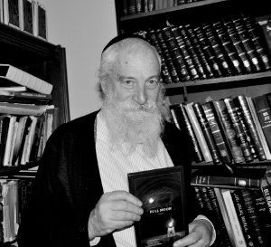

The Chassidic Storyteller from the Bronx
Every Motzaei Shabbos at the Ascent Institute of Tzfas, dozens of Jews of all ages and persuasions from all over the world sit with Rabbi Yerachmiel Tilles during the Melaveh Malka, as he tells them a few of his exciting Chassidic stories. The only thing they don’t know is that Rabbi Tilles went through his own intriguing journey in the worlds of sports and philosophy and even experienced a brief brush with Buddhism. Today, he sends people to the Arizal’s Mikveh, and the results are virtual spiritual revolutions. This is his amazing life story with accounts of his personal audiences with the Rebbe and a vivid description of his wide-ranging outreach activities. Part 1 of 2

Rabbi Yerachmiel Tilles, co-founder of the Ascent Institute in the holy city of Tzfas, is a most impressive individual. As a young man, Rabbi Tilles received a bachelor’s degree in philosophy from the State University of New York in Binghamton. He eventually came closer to Torah and mitzvos and studied at Yeshivas Hadar HaTorah in Crown Heights.
THE REBBE SUDDENLY DETAINS HIM FOR AN “INQUIRY”
In Kislev 5734, he married his wife, Shulamis (nee Lauterbach). As Pesach 5736 approached, R’ Yerachmiel remembered that the Rebbe gave a piece of matza on Erev Pesach before Mincha to everyone who passed before him. This information aroused a strong desire within him to make his own Pesach Seder. Then he could invite guests and be entitled to request more matza from the Rebbe. When he shared the idea with his wife, she too was filled with excitement. They decided that while they would go to someone else’s home for the first Seder, they would make the second Seder themselves.
With enthusiasm, they invited sixteen guests to join them at their table!
The young couple was unaware of the numerous preparations and the tremendous effort that would be required to make a Seder in their own home. The task would be even greater and far more demanding because neither of them had been raised in a Chabad home, and they had never experienced all the many Seder preparations or gone through the whole pre-Pesach routine. Suddenly, R’ Yerachmiel found himself grinding horseradish as his eyes incessantly welled with tears. They also had to prepare the charoses, soak, check, and dry a huge quantity of bitter lettuce leaves – enough for eighteen people – not to mention the cleaning, the purchases, and cooking for the Yom Tov meals. The words “We were slaves to Pharaoh in Egypt” suddenly took a new and more tangible dimension…
Despite the challenge, the fact that they would be privileged to receive pieces of matza from the Rebbe himself imbued them with the strength they needed to overcome the difficulties and complete all the work.
Then, as R’ Yerachmiel rushed through the pressure of his Erev Pesach preparations, the unbelievable happened: he suddenly noticed the late hour and ran with all his might to 770 in order to receive matza from the Rebbe. He came to the front entrance, only to be told that “the Rebbe has just finished giving out matza and has gone in to daven Mincha.” There were no words to describe the pain and anguish he felt at that moment. He was brokenhearted.
One of the Chassidim standing nearby, who noticed R’ Yerachmiel’s distress, told him that it wasn’t too late; there would be another opportunity. He told him that after Maariv on the first night of Pesach, the Rebbe usually gave out matzos again to those who hadn’t managed to receive matzos on Erev Yom Tov.
Thus reassured, a huge burden was lifted from R’ Yerachmiel’s heart, as he realized that he would be given another chance to receive matza from the Rebbe’s holy hand.
That night, R’ Yerachmiel was particularly cautious. Even before Maariv was over, he went out to grab a good spot at the front of the line. When the door opened, he breathed a sigh of relief. “Only a few people had gotten in line before me,” he recalled, “and now my turn had come. Before the Rebbe was a table, and behind him was another table with the matzos placed upon it. The Rebbe gave me a piece of matza as he did to everyone else, and then wished me ‘A gutten Yom Tov, a kosher’n un a freilichin Pesach.’ Of course, I didn’t settle for that, and I told the Rebbe I was hosting numerous guests for the Seder. The Rebbe turned slightly towards the matzos behind him, and then suddenly he looked at me and asked, ‘Are you asking for tonight [the first night of Yom Tov] or for the Seder tomorrow [on the second night of Yom Tov]?’ I replied that I was asking for the Seder of the following night.
“‘If so,’ the Rebbe said in English, ‘I cannot give you the matzos now, because it’s forbidden to prepare on the first day of Yom Tov for the second day of Yom Tov… However, you can come back tomorrow night and get matzos,’ the Rebbe immediately added in a tone of reassurance. I stood there stunned by the Rebbe’s ruach ha’kodesh. How did the Rebbe know?”
This represented a clear illustration of the pasuk “No wrong shall be caused for the righteous,” i.e., G-d does not bring about an obstacle through a tzaddik.
While there were many more people after R’ Yerachmiel Tilles asking for matzos, the Rebbe didn’t ask any of them for which night they were requesting. In fact, it was determined after a brief investigation that the Rebbe had never made such an inquiry of one of his Chassidim before.
R’ Yerachmiel and his wife ate the first piece of matza received from the Rebbe on the night of the first Seder.
The following evening, the second night of Pesach, R’ Yerachmiel went to the Rebbe’s secretariat to ask for the matzos the Rebbe had promised him the night before. The secretary, Rabbi Yehuda Leib Groner, just shrugged his shoulders, saying that the Rebbe was not accustomed to giving out matza on the second night of Yom Tov. Yet, R’ Yerachmiel would not relent, explaining that the Rebbe had told him to come. For his part, Rabbi Groner was just as adamant: There was no such thing, and there never had been!
Finally, Rabbi Groner agreed to ask the Rebbe about the matter. After waiting for a few minutes, he came back with a package of matzos wrapped in large brown paper and said, “The Rebbe asked that I should give you these matzos.”
“I was simply overjoyed. The package contained numerous pieces of matza. I returned home extremely happy. Now, I had a new and most unusual story to tell our many guests at the beginning of the Pesach Seder, as well as some very special matza to share with them…”
“SATURDAY NIGHT, FULL MOON”
For thirty-five years, Rabbi Tilles has been privileged to organize Jewish outreach activities, primarily geared to native English speakers within the framework of the Ascent Institute of Tzfas, which he founded together with his two colleagues, Rabbi Moshe Yaakov Wisnefsky and Rabbi Shaul Leiter. Now situated in an ancient structure in the heart of Tzfas’ Old City along the road to the Ari’s mikveh, large numbers of people, including many referred by Chabad shluchim from all over the world, come to Ascent and enjoy its accommodations. Here, they take in the sweet spiritual aroma of the Galilean city of Kabbala and learn the tenets of Jewish faith and the esoteric teachings of Torah.
In 5743, five years after he came to settle in Tzfas with the Rebbe’s bracha, Rabbi Tilles worked to establish this institution and dedicated much time to the production of a quarterly magazine filled with Jewish and Chassidic content. This publication was distributed throughout the Jewish world, and it served as an important tool in bringing many Jews back to their roots. Rabbi Tilles currently devotes his efforts in publishing articles about Judaism and Chassidic stories on Internet sites designed for Jewish outreach, in addition to providing answers to inquiries posed on-line by web users from all over the globe.
Rabbi Tilles has a reputation as a Chassidic storyteller of the highest order. His engaging anecdotes have been translated into several languages for Chabad websites in Eretz Yisroel and throughout the world. “Every question that you’ll ask me will receive a reply with a story,” he says with a smile. Recently, he has published his first book, “Saturday Night, Full Moon”, a collection of many of the best stories he has told during the weekly Melaveh Malkas he conducts each Motzaei Shabbos at Ascent. The book also includes an entire chapter explaining the laws of Motzaei Shabbos in the light of Kabbala and Chassidus.
While Rabbi Tilles’ beard is already white, he also has the benefit of an unlimited supply of energy. This interview had been postponed for more than a year due to time constraints stemming from his many roles and responsibilities. We finally set a time during the week before Yud-Alef Nissan.
We asked for an interview covering all aspects of his fascinating life story. We discussed his early years as a young man growing up in America with a family far from traditional Judaism, his personal path to t’shuva, and the many special answers and expressions of affection he received from the Rebbe, including his extensive activities with those on the level of “the fifth son,” who don’t know what it means to be a member of the Jewish People.
DISTANT CHILDHOOD YEARS
Rabbi Tilles was born and raised in the Bronx, New York. Both his maternal and paternal grandparents had come to the United States from Russia before the outbreak of the First World War. “While my father grew up in an Orthodox home, with the passage of time he became distant from Torah observance. As a result, there were no Jewish symbols anywhere in our house. I invested all my strength and energy into sports. My main love was baseball, and I became a very successful player.”
Due to social pressure from several of his Jewish friends, when he reached the age of thirteen, his father took him to make a bar-mitzvah at a Conservative synagogue. “This was the first time I had ever put on t’fillin, and I even learned to read the Haftarah. However, you can’t say that this was a real Jewish experience for me. I thought that the text of the Haftarah was just a meaningless collection of words.”
When Yerachmiel completed his high school studies, he enrolled in the philosophy program at the State University of New York in Binghamton. He says that it was the logic of mathematics that connected him to the field of philosophy. Yet, the sports bug stayed with him even while in college. Alongside the progress he was making in his undergraduate studies, he began to develop an impressive sports career. At the start of his senior year, he became the captain of SUNY Binghamton’s basketball team in its intercollegiate competitions.
“The team’s coach was a gentile who believed in the Alm-ghty, and before every game, he required us to assemble for a moment of silence. During those brief seconds, we would pray to the Creator that we should do the very best we could without getting hurt or hurting anyone else. Many students who joined the team first looked upon this custom with puzzlement; however, they eventually came to appreciate it. In those early years, I believed that my future lay in the basketball profession. However, such thoughts were eventually put aside in the face of another project that attracted my attention.”
THE MONK REVEALED THAT TORAH HAS ITS OWN SECRETS
During the presidency of John F. Kennedy, the government of the United States came up with a ground-breaking initiative on how to get various segments of the world’s population to embrace the American ideal and the American people. The idea was to establish the “Peace Corps,” a nucleus of hundreds of volunteers who would be sent to remote towns and villages across the globe to help the local people with education, agriculture, and social organization, and bring them closer to the principles of American society.
“The coordinator for this program was President Kennedy’s brother-in-law, Mr. Sargent Shriver. When I heard about the project, I decided to submit an application. Once it had been approved, the next step was to pass a difficult exam of general knowledge. On the final page of the exam, they ask to which country you would like to be assigned. However, I left this line blank, because I had been told that if you don’t choose a country, Mr. Shriver calls the applicant personally. That’s exactly what I wanted, but it didn’t quite work out that way. In any case, I received my official acceptance to the Peace Corps shortly thereafter to serve in Thailand. In 5726, we gathered together, eighty-four students, at Northern Illinois University for two months’ training, where we learned about the Thai people, their language, and their culture, followed by another month of teacher training in Hawaii. In the end, only about half of the candidates successfully finished the training, and I was among them.
“After a few more months of preparation, I arrived at the remote Thai village of Chumsaeng in the province of Nakom Sawan. A staff of local teachers welcomed me with great warmth, and I got straight to work as an English teacher. I saw this as a real mission.
“When I came to the village for the first time, it was also the first time that most of the people there had ever seen a Caucasian. In those first few weeks, the children followed me with complete astonishment wherever I went. Most Thais don’t know what a Jew is; they had thought that I was Christian. During my second year there, the Six Day War was fought in the Middle East, and Israel h received tremendous international publicity. Then, when I would say that I was Jewish, the locals would say, ‘Oh, just like General One-Eye,’ in reference to the minister Moshe Dayan, whose picture had appeared all over the newspapers following the instant victory over the Arab armies.”
Tilles devoted himself to his educational work and encountered much success. He stubbornly spoke with his students in English only, visiting the family homes during the evening. “You couldn’t reach this village by automobile; the ways to get there were by train or by a ferry along the river. To get to the train station, you had to pedal a bicycle or use a motor scooter.
“One day, the school faculty decided to organize a staff trip by boat to a small island near the village where an old Buddhist priest lived. While en route to the island, one of the teachers spoke to me with great enthusiasm about the ship and the enchanting views visible on deck. She then began to talk about the true profit in life (at first, I thought she meant “prophet”). This marked the first time that I understood that classic American pursuit of money and the setting of grandiose objectives are devoid of all inner content. Excitement over every little detail of the Creation is the inner path by which a person should live.”
This insight gave the young Tilles reason to search for another purpose in life with a far greater measure of truth.
“The Buddhist monks in the local monastery would go through the town’s main street each morning, holding out an open pot to collect food from village residents for their two daily meals. This was how they obtained their daily sustenance. Their only possessions were what they carried in a small cloth shoulder bag. This aura of simplicity captivated me. I began to realize something amazing about the Buddhist way of life. Despite their dire poverty, I saw that they were truly happy. Being an intelligent Jew, I immediately found out who the most prestigious Buddhist priest was in Thailand, and I went to go see him.” Tilles wanted this person to teach him the foundations of Buddhist teachings as a means of starting a whole new life for himself.
When he arrived at the Buddhist center, he met dozens of people from the United States, Germany, Japan, China, and India. “A meeting was arranged for me with the priest, and his first question to me was: ‘To what religion do you belong?’ I told him that I don’t belong to any religion. ‘There’s no such thing,’ he replied. ‘Everyone is born with an identity. Where do you come from?’ I told him that my parents were Jewish, but it means nothing to me. He didn’t like my answer. He told me, ‘If so, the Tanach is your tradition, and I’ll only teach you from your book.’
“It turned out that this monk knew the Tanach well. At every meeting we had, we raised an issue or a story from Jewish sources and he explained it to me in spiritual terms. Once, when he asked me a question that I couldn’t answer, he proceeded to explain that there’s much more to the Tanach than what is actually written. It has its own corresponding value in the spiritual worlds.
“After a few of these sessions, the monk told me, ‘Go learn about the Jewish religion, which is your religion. There’s nothing more for you to do here.’ Foolishly, I thought that the priest was rejecting me without cause, and I refused to abandon the center. If he doesn’t want to teach me, I thought, I’ll learn from his students. Thus, over a period of several months, they taught me all about Buddhism and its meditations…”
(To be continued next week IY”H)
“Saturday Night, Full Moon” is available for purchase in Tzfas at Ascent and KabbalaOnline-Shop.com, from the publishers, Menorah-books.com, and very soon in all major Jewish bookstores.
Nosson Avrohom. "The Chassidic Storyteller from the Bronx." Beis Moshiach, no. 926 (May 13, 2014).